Tips
විස්තර ටික පිළිවෙලට කියවන්න.
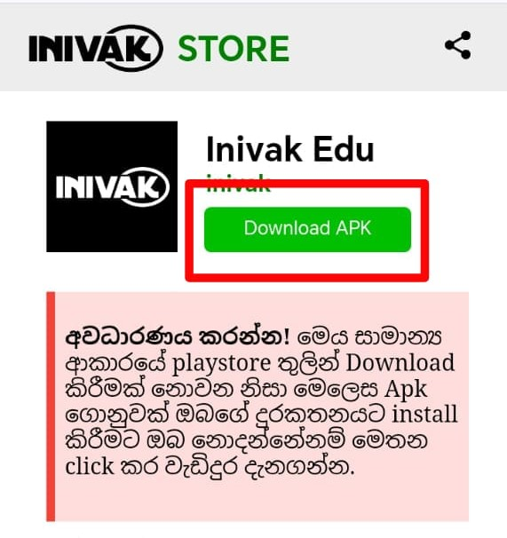
ඔය තියන Download Apk බටන් එකෙන් ඔයාගෙ ඩව්න්ලෝඩ් වෙන එක පටන් ගන්නවා. හැබයි මෙතෙන්දි Download වෙන්නෙ App එකක් විදියට නෙවෙයි file එකක් විදියට.
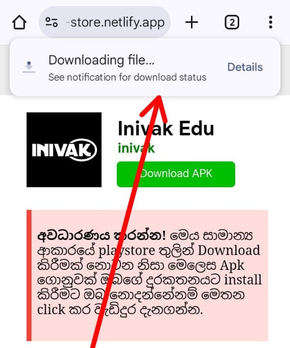
දැන් උඩින් ඔහොම download වෙයි , සමහර විට මීට කලින් මේ ඇප් එක අනතුරු දායකයි කියලා මැසෙජ් එකක් පෙන්නන්න පුලුවන් වගකීමෙන් කියන්නෙ එහෙම ප්රශ්නයක් වෙන්නෙ නැහැ.
එහි වගකීම අපි විසින් භාරගනු ලැබේ
අන්න එකනිසා බය නැතුව app එක download anyway දිලා download කරගන්න.
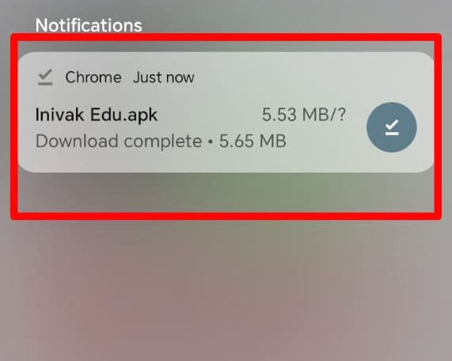
දැන් මෙහෙම නොෆටිකෙශන් බාර් එකෙ ඩව්න්ලොඩ් වෙල ඉවර උනු file එක පෙන්නයි. මෙක මෙතන තිබ්බෙ නැතිඋනොත් ඔයාගෙ divece එකෙ my files වලට ගිහින් Downloads කියන file එක ඇතුලෙ බලන්න අනිවාරෙන්නම ඇති.
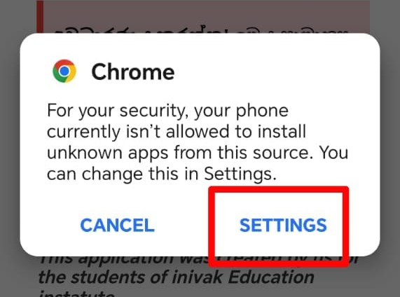
මෙතන මේ කරන්නෙ ඔයා inivak Edu app එක download කරපු source එකට app install කරන්න අවසර දෙන එක...
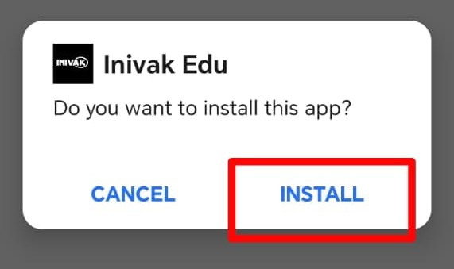
මෙන්න මේ බටන් එක ඔන් කරගන්නකො...
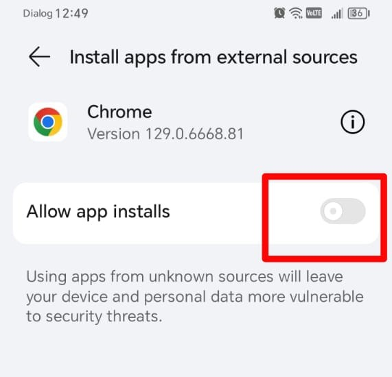
දැන් install කරගන්න පුලුවන්
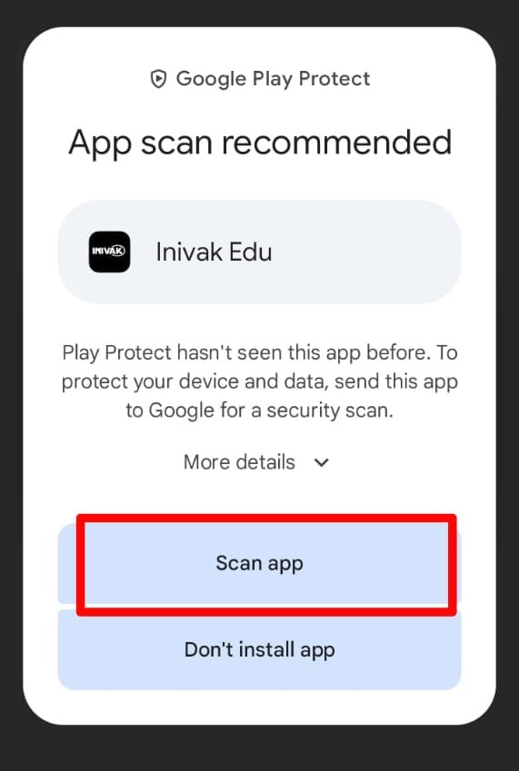
ඔන්න දැන් ඔයාලට මේ app එක ඇතුලෙ virus හරි වෙන මොකක් හරි ප්රශ්නයක් තියද කියලා බලන්න google එකෙන් scan කරන්න කියනවා
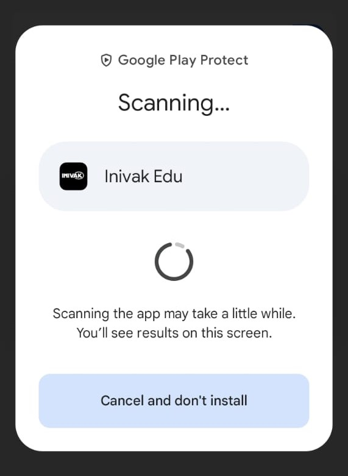
ඔව් මෙක ඔහොම ස්කෑස් වෙන්න තියන්න ඇප් එකෙ අව්ලජ් තිබ්බොත් පෙන්නයි.
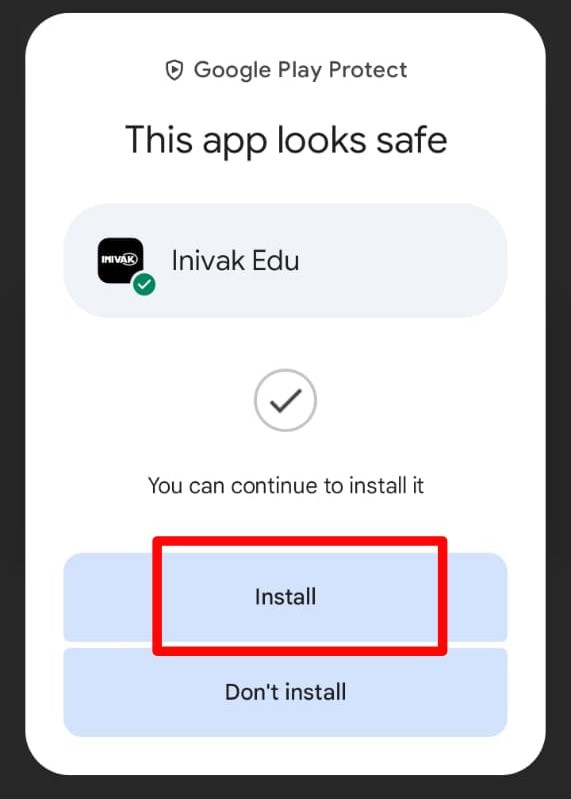
ඔන්න ඇප් එක හරිලු කිසිම අව්ලක් නැ කියලා google එකෙන්ම කියන නිසා බය නැතුව install කරගන්න.
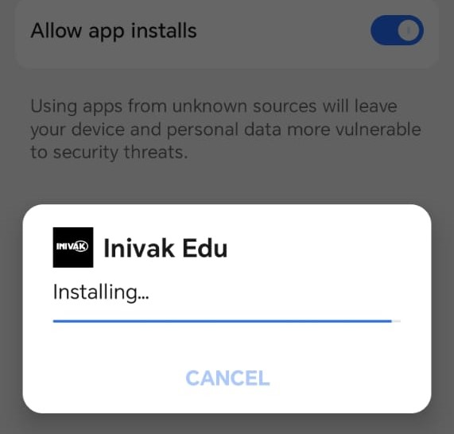
Install වෙනවා...
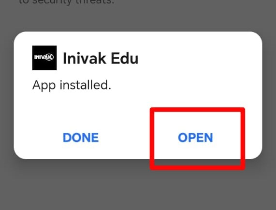
ඔන්න දැන් හරි ✓